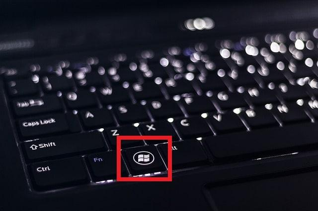
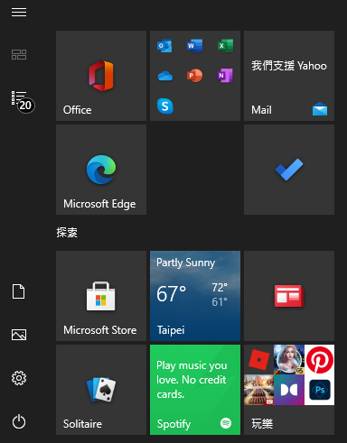
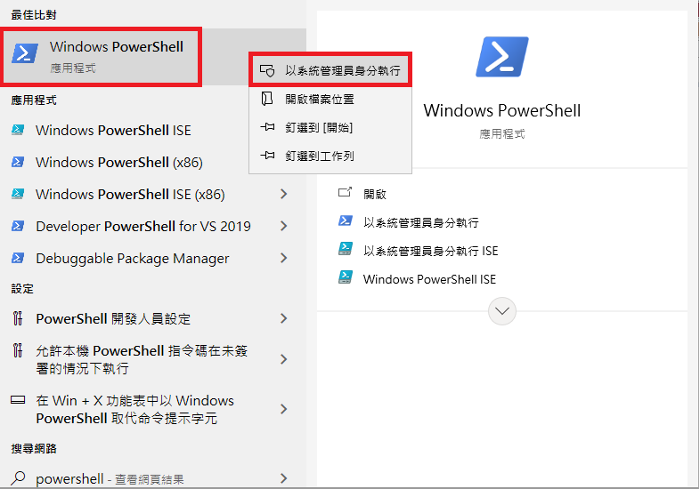
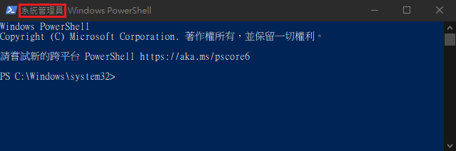
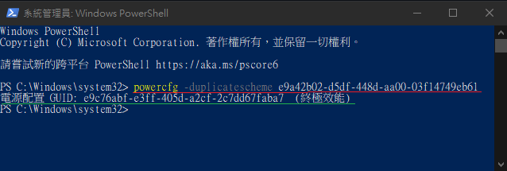
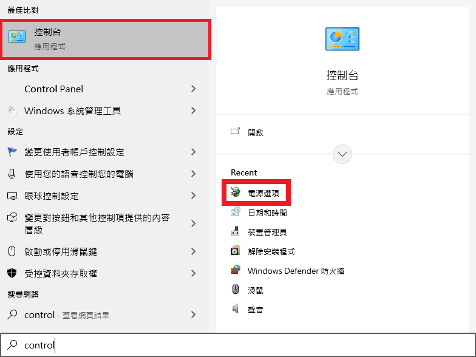
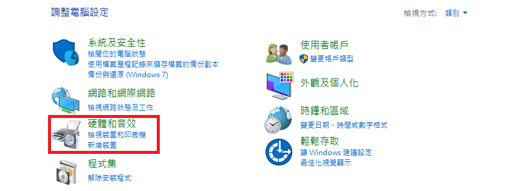
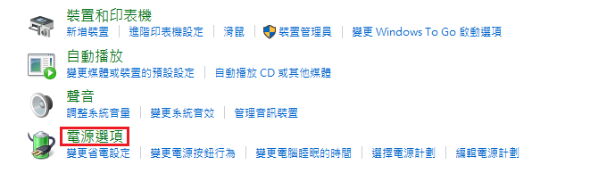
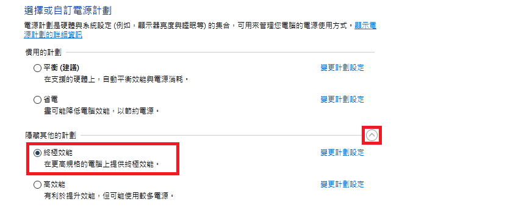

一招啟動 Windows 10 「終極效能」！讓你的電腦瞬間活起來！
# 什麼是「Ultimate Performance (終極效能)」
微軟在 Windows 10’s April 2018 Update 中添加了「 Ultimate Performance (終極效能) 」這樣一個模式，最初該更新被命名為「Spring Creators Update」，也正式從 Win-10 1803 版本後開始可以使用該模式。
Ultimate Performance (終極效能) 是一種「電源計劃」。
可能有些人早就知道，Windows 10 提供我們選擇電源計劃的功能，在 Power Options (電源選項) 中，沒意外一般的電腦只會出現最多三種選項，分別是：
-
Balanced (平衡): 讓為你自動調整效能，使耗電與效能平衡。 -
Power Saver (省電): 降低系統的效能以節省電源。 (通常是筆記型電腦處於低電量時系統自動開啟) -
High Performance (高效能): 消耗更多的電力，讓系統發揮更高的效能。
而 Ultimate Performance (終極效能) 則是比 High Performance (高效能) 模式的效能來的更強。
欸？可是沒看到 Ultimate Performance (終極效能) 呀？
別急，因為這個模式預設是給 Windows 10 Pro 使用的，其他版本的用戶是需要 手動開啟 的！
# 開啟 Ultimate Performance (終極效能)
# Step. 1 開啟 Powerline
-
按下左下角的 Windows 圖示叫出
選單。
(你也可以按下鍵盤的Win鍵，如下圖，大概在左邊的Ctrl與Alt旁邊)

這是選單的樣子:
 -
當選單跳出時，請直接在鍵盤輸入「
powershell」。(ps. 注意輸入法要調整成英文)
正常來說會找到這樣的 Logo，並寫著「Power Shell」字樣的程式: -
對它點擊
滑鼠右鍵>以系統管理員身份執行。

沒意外應該會出現類似這樣籃底白字的視窗 (注意左上角應該要出現系統管理員字樣):

# Step. 2 輸入指令
首先複製以下這段指令:
1 | powercfg -duplicatescheme e9a42b02-d5df-448d-aa00-03f14749eb61 |
接著到剛剛的 Power Shell 視窗中，按下 滑鼠右鍵 貼上後按下 Enter 。

如果看到系統回應你如上圖的資訊，
那麼恭喜你成功 激活 Ultimate Performance (終極效能) 模式！
但注意！這時候 還沒啟動 它。
如果系統沒有回應該訊息，那或許是 指令輸入錯誤 ，請再確認輸入是否正確。
並且請確認 Power Shell 是以 管理員身份開啟 。
如果以上都做到了，還是不能，那很有可能是電腦版本不支援這個模式，前面有說到，電腦的版本必須是 1803 以上 。
# Step. 3 啟動 Ultimate Performance (終極效能)
-
跟剛剛一樣，在按下
Win鍵叫出選單後，直接在鍵盤輸入「control」。
如果右方有出現「電源選項」則直接點選，並跳至步驟 3-4
沒有出現的話就點擊控制台:
 -
點選「
硬體與音效」
 -
點選「
電源選項」
 -
# 有出現電源選項直接跳至這裡
在這裡就可以看到下方出現「 終極效能 」的選項了！直接選取即可。
(ps. 如果沒出現選項，那可能是被隱藏了，請點選右方按鈕)

# 完成
這麼一來就完成了！
但注意唷，建議如果沒有這個需求的朋友們平時不要開著這個模式，這會導致沒必要的耗電 (夏天電費很貴 QQ)
最後，如果這篇文章有幫助到你，那也請不吝嗇轉發分享給你的朋友們看唷！
 BTC
BTC PayPal
PayPal